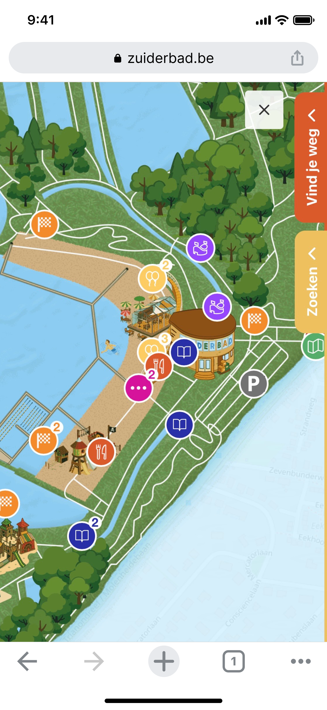
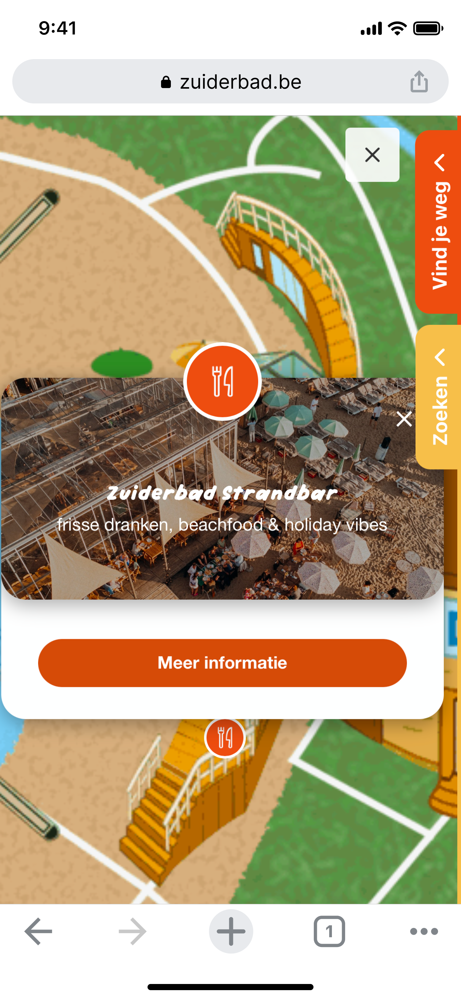
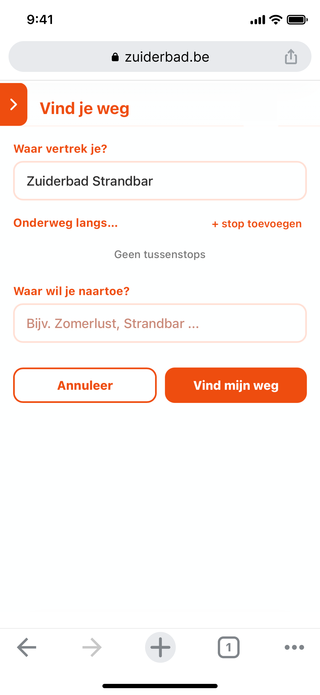
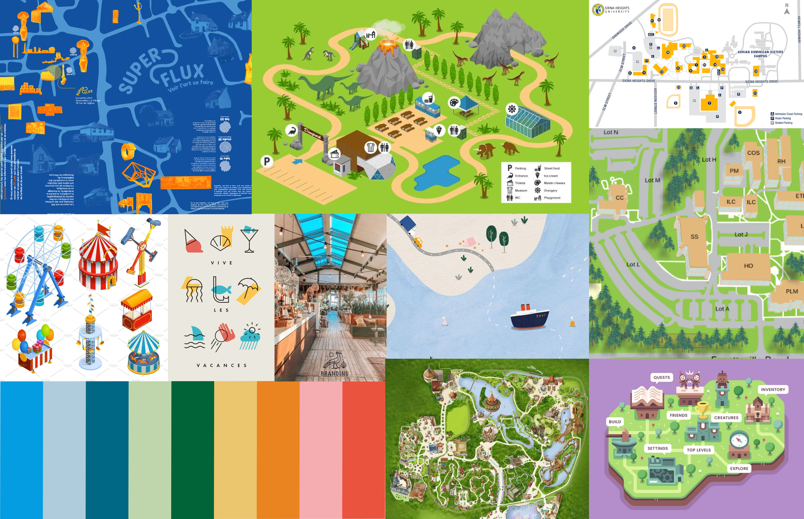
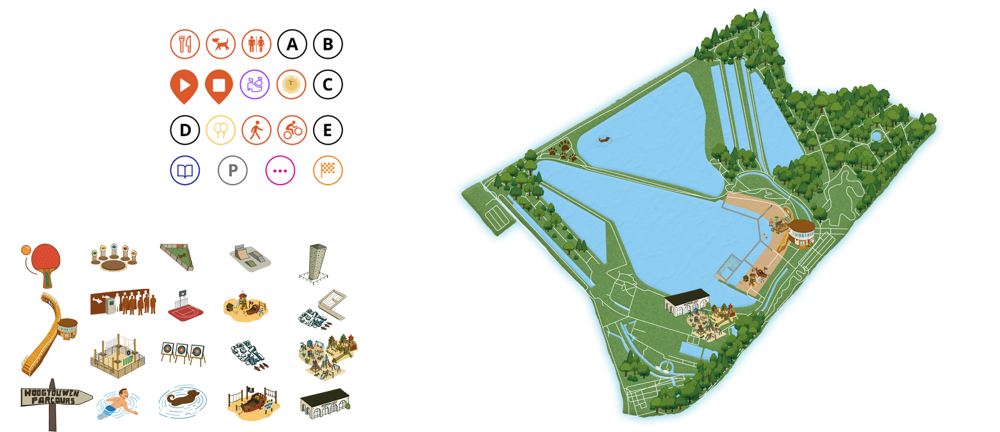
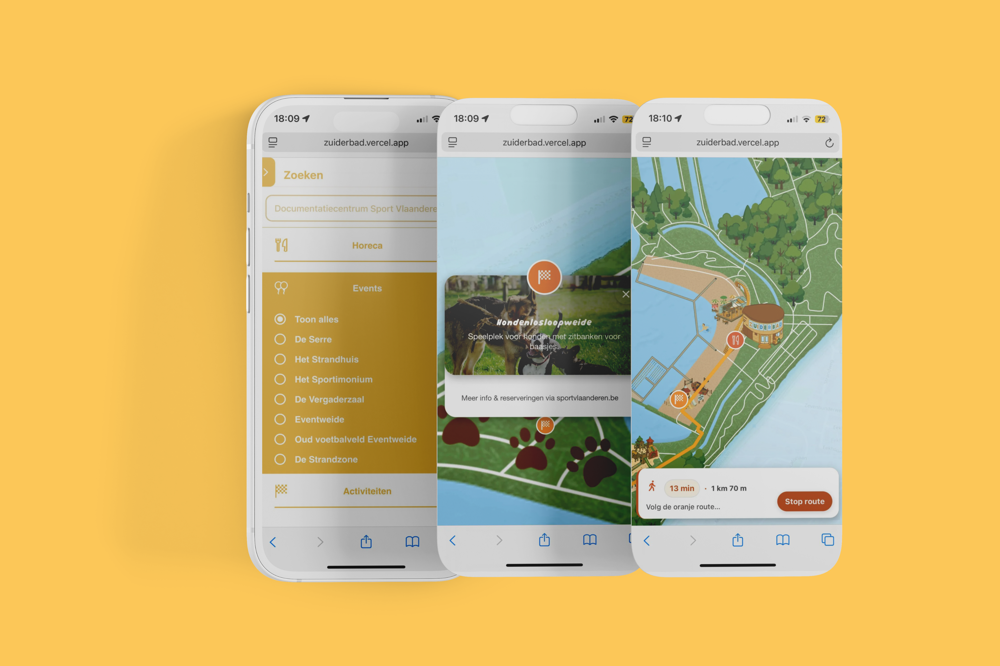
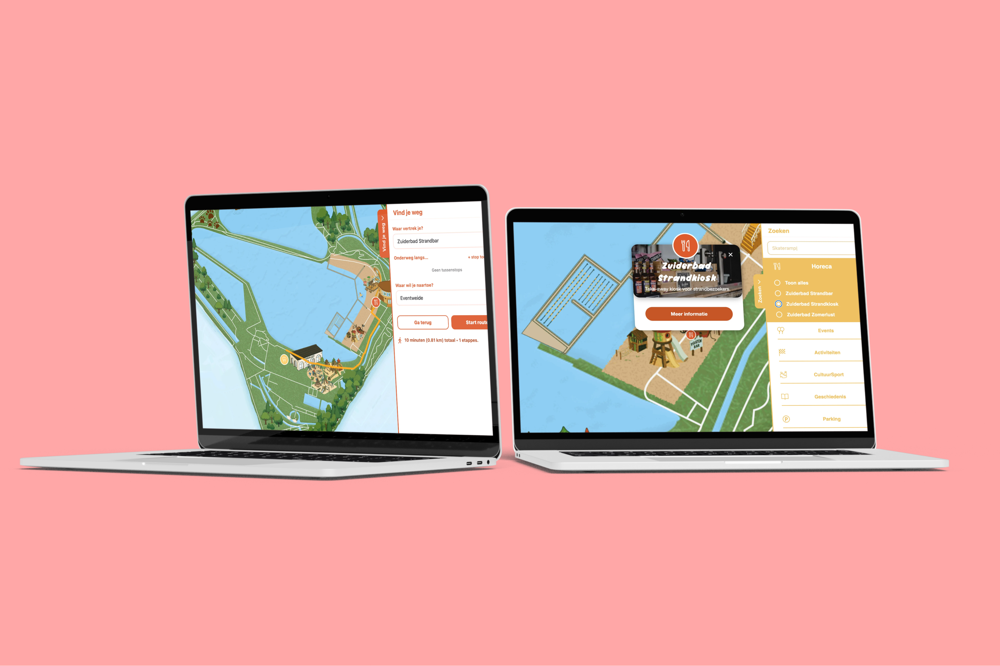

Zuiderbad: Interactive Map
An interactive map for Zuiderbad in Hofstade that helps visitors explore the domain in an intuitive and playful way.
We developed an interactive map that visually and intuitively represents the entire domain. With a route planner, filters, and pop-ups, visitors can easily navigate and quickly find the information they need. The design is aligned with Zuiderbad’s branding, featuring custom icons and illustrations. The map is also fully responsive, making it easy to use on both desktop and mobile for families, athletes, and organizations.
The collaboration started as a school assignment. Once the project ended, Zuiderbad was so enthusiastic about the result that we were invited to further develop it for real-world use.
Visitors to Hofstade found it difficult to explore the domain. There was no clear map showing restaurants, activities, and routes in an organized way. The existing information was scattered and not mobile-friendly, causing users to often get lost or struggle to quickly find what they were looking for.



In the first phase, we identified the needs of both visitors and stakeholders. A site visit helped us better understand how people physically move through the domain. We kicked off with Zuiderbad to define expectations and requirements, followed by an on-site visit to observe user behaviour. We also analysed existing map solutions and competitors, and defined the key functionalities.


My focus was on the UX/UI design. I designed the icons and illustrations, developed the interface in Figma, and ensured visual consistency throughout the final product. In addition, I also took on part of the front-end development. I contributed to components such as pop-ups, detail pages, and UI adjustments. This allowed me to ensure that the look and feel I designed in Figma was effectively carried through into the working application.
The visual side of the project was all about making the map feel clear, friendly, and fun to use. A visual style was created that matched the branding of Zuiderbad, along with a custom set of icons and illustrations. Everything was worked out into high-fidelity designs in Figma for both mobile and desktop. The goal was to create an application that feels consistent and easy to navigate, while also giving it a playful look that fits the atmosphere of Zuiderbad.


Back to projects overview
Back
Next
Begijnhof Hasselt